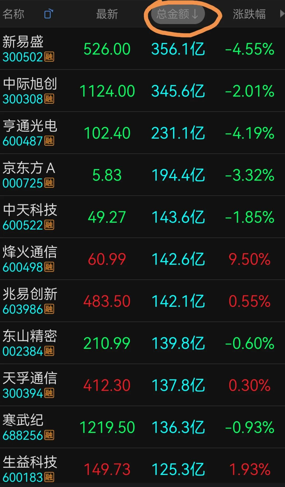
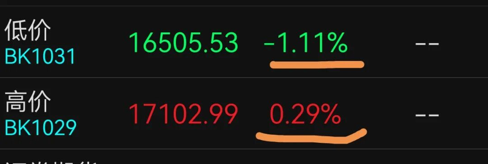

昨天文章有个关注一个半月的次新读者留言，询问有关个股情况，并问我如何选股。我一看没打赏就立即拉黑了，后回过头一看，点赞和小红心都50多个，看来可能是真爱，算了，先留着吧。
成年人讲的就是利益交换，没什么不好意思讲的。利益交换也包括提供情绪价值，不一定是赤果果的金钱，老娘现在最不缺的就是钱，也不缺尊重，就想放飞自我，爱咋咋地，随心所欲。
说到选股问题，其实太简单了。我记得前面文章已提到过，你们就看成交金额排名完全足够了，这是最强的一招鲜。

①成交金额排行榜，涨跌幅情况，前30个几红几绿？对照大盘浪型分析所处位置。
②前列的分属什么指数什么板块，归纳同类项，然后看这个排行榜最集中的所属板块的浪型趋势。
③市场情绪偏重大还是小？高价股还是低价股？投资属性还是投机属性？机构主场还是游资主场？然后做龙头个股不要太简单哦。

此法贯穿牛熊，无论是捉妖，还是骑牛，方法雷同。不过，此法在牛市中做趋势牛股效果更好，因为稳定性极强，而在大熊市中捉妖，我更有顶级牛逼的宇宙最强龙妖悉数拿下之战法。
别看我不做股票不聊个股，说实话，那些网上做股票牛逼哄哄的真实力股神，在我眼里连只鸟都算不上，我根本就不打正眼看。
平均每个月都赚不上50%，就不是一个合格的股民，这个要求不高吧，最基础的及格线。8年前我最后一次做股票，3个月翻六七倍，全网全过程实时公开的，上万人见证，我也觉得就是正常发挥而已。
有实力不一定都是低调谦虚的，每个人性格不一样，如我，就喜欢公开瞎哔哔，吹一通就感觉酣畅淋漓、神清气爽、如沐春风，管别人怎么看呢。
~~∽
近日一直提到4010.87点这个微浪型划分点，上午已突破，上升时间远超32个15分钟，左侧判断某级别B浪上升开启。
注意：这个B浪性质暂时不清楚，所以暂定为某级别B浪，将来会讲。这个B浪会不会反转，演绎为新一轮的上升？我也不知道，但已经有预案了，复合浪嘛。
左侧判断，不是小右侧判断，更不是右侧确认，成功率和风险度是不一样的。好比判断底背离，先要有底部钝化，然后底部结构，最后才底背离，有一个循序渐进的过程。
小右侧判断，是要突破4107.05点才行。此点为某级别A浪之短长浪中的长浪内部的微浪型划分点，属于最基础的小右侧。
没有系统学过我课程的朋友，估计会云里雾里不知所云，那就稀里糊涂地看吧，我没有耐心普及。反正我写文章就是自娱自乐，不是为你们服务的，没有指导义务。
补一缺并留一缺，是国家队基本操作，相当长一段时间内，国家队程序就是这样设计的。若补缺不留缺，我也知道国家队的意图，当过大令导秘书的人，一定知道我在说什么。这就是细节揣摩，人性展于外，言行均有迹可循，故细节决定成败。
筑底初始阶段，一定不会一帆风顺的，反复上下磨底很正常，但3927低点估计6月份是破不了的。整个B浪反弹高度，我认为涨到0.618的4132点是没有问题的，耐心等待。
今天先看4041.46点是否突破，突破则有延续性，谓之微3主升或微长浪，但过程也很折腾。
今天留言放开自动精选，专为打赏过的朋友自由讨论。没打过赏的人不要凑热闹，随时拉黑，谢谢。